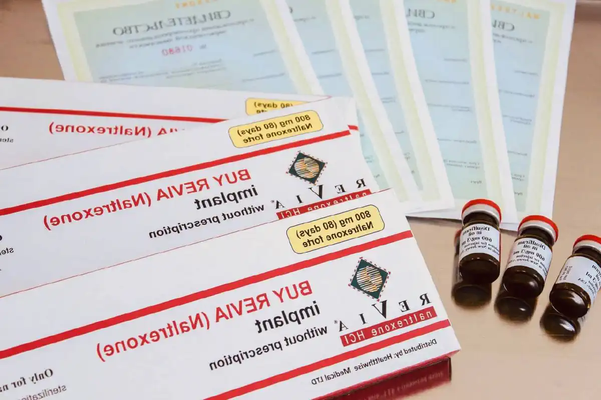

+38(068) 79 72 782
+38(068) 79 72 782Підшивка від алкоголізму
Надійний бар'єр між вами та алкоголем


Безкоштовна консультація, працюємо цілодобово 24/7
Надійний бар'єр між вами та алкоголем

Дата написання: Оновлюється...
Останнє оновлення: Оновлюється...
Підшивка від алкоголізму — це медикаментозний метод лікування алкогольної залежності, при якому в організм пацієнта вводиться препарат, що формує стійку непереносимість спиртного або виражений страх перед вживанням алкоголю. Найчастіше підшивка застосовується як частина комплексної терапії, коли людина вже пройшла детоксикацію, перебуває у тверезому стані та усвідомлено готова відмовитися від алкоголю.
Головне завдання підшивки — створити захисний бар’єр від зриву. Після процедури вживання спиртного може призвести до тяжкої реакції організму, тому пацієнта заздалегідь попереджають про можливі наслідки. Такий метод допомагає утриматися від алкоголю в період, коли психологічна тяга ще зберігається, а звичка пити залишається сильною.
Підшивка не є самостійним «чарівним» лікуванням алкоголізму. Дисульфірам, який часто використовується в терапії алкогольної залежності, не лікує алкоголізм сам по собі, а допомагає утримувати людину від вживання спиртного за рахунок реакції на алкоголь. Тому для стійкого результату підшивку бажано поєднувати з консультаціями нарколога, психотерапією, відновленням організму та профілактикою зривів.
Хірургічним лікуванням алкогольної залежності зазвичай називають процедуру підшивки, при якій препарат вводиться під шкіру через невеликий розріз. Такий метод застосовується не в гострому стані, а після попередньої підготовки, коли пацієнт тверезий, усвідомлює наслідки процедури та добровільно погоджується на лікування.
Підшивка може бути рекомендована при хронічній алкогольній залежності, частих зривах, запоях, неможливості самостійно утриматися від вживання, слабкому контролі над дозою та високому ризику повернення до алкоголю після детоксикації. Особливо часто такий метод розглядають, коли людині потрібен додатковий медикаментозний бар’єр, що допомагає зберегти тверезість. Перед процедурою обов’язково проводиться консультація нарколога. Лікар оцінює стан пацієнта, уточнює тривалість вживання, наявність хронічних захворювань, психоемоційний стан, протипоказання та мотивацію до лікування. Підшивка не повинна проводитися в стані алкогольного сп’яніння або без повної інформованої згоди пацієнта.
Підшивка від алкоголю проводиться тільки після огляду лікаря та виключення протипоказань. Перед процедурою пацієнт має бути тверезим. Також важливо, щоб людина розуміла принцип дії препарату, можливі наслідки вживання алкоголю після підшивки та необхідність повної відмови від спиртного.
Процедура зазвичай проходить у кілька етапів. Спочатку нарколог проводить консультацію, збирає анамнез, оцінює загальний стан і пояснює пацієнту, як діятиме препарат. Потім проводиться підготовка до процедури. За необхідності лікар може рекомендувати попередню детоксикацію, особливо якщо пацієнт нещодавно вживав алкоголь або перебував у запої.
Сама підшивка виконується у стерильних умовах. Препарат вводиться під шкіру, після чого місце втручання обробляється та закривається пов’язкою. Після процедури пацієнт отримує рекомендації щодо догляду, обмежень, подальшого спостереження та повної відмови від алкоголю. Важливо дотримуватися всіх призначень лікаря. Не можна вживати спиртне, алкогольвмісні напої, а також деякі засоби та продукти, які можуть містити спирт. Пацієнт має заздалегідь обговорити з лікарем усі важливі обмеження, щоб уникнути небезпечної реакції.
Для підшивки від алкоголізму найчастіше використовують препарати на основі дисульфіраму. Ця речовина блокує нормальний розпад алкоголю в організмі, через що при вживанні спиртного може виникати різке погіршення самопочуття. Саме цей механізм формує медикаментозний бар’єр і допомагає людині утримуватися від алкоголю.
До препаратів, які можуть застосовуватися в межах протиалкогольної терапії, належать засоби на основі дисульфіраму, включаючи препарати, відомі під назвами Еспераль, Торпедо та інші форми медикаментозного кодування. Конкретний препарат підбирає лікар після огляду пацієнта. Вибір засобу залежить від стану здоров’я, стадії залежності, тривалості тверезості перед процедурою, протипоказань, мотивації пацієнта та бажаного строку дії. Самостійно обирати препарат або проводити підшивку без лікаря не можна, тому що це може бути небезпечно для здоров’я.
Підшивка Дисульфірамом від алкоголізму — один із поширених методів медикаментозної підтримки тверезості. Дисульфірам не усуває психологічну залежність напряму, але створює виражену заборону на вживання алкоголю. Якщо людина після підшивки вип’є спиртне, може розвинутися тяжка дисульфірам-алкогольна реакція.
Перед застосуванням дисульфіраму пацієнт має бути повністю поінформований про дію препарату. Медичні джерела підкреслюють, що дисульфірам не можна призначати людині в стані алкогольної інтоксикації або без її повного розуміння того, що відбувається. Підшивка Дисульфірамом краще працює у пацієнтів, які справді хочуть відмовитися від алкоголю та готові дотримуватися тверезості. Якщо людина погоджується на процедуру лише під тиском родичів, без внутрішньої мотивації, ризик зриву та спроб порушити заборону залишається високим.
Підшивка Еспераль — це один із варіантів медикаментозного кодування від алкоголізму, який використовується для формування стійкої відмови від спиртного. Основний принцип методу пов’язаний із тим, що після введення препарату алкоголь стає небезпечним для організму та може викликати виражену негативну реакцію.
Особливість методу полягає в тривалому психологічному та медикаментозному бар’єрі. Пацієнт розуміє, що вживання алкоголю після підшивки може призвести до різкого погіршення стану, тому в нього з’являється додаткова опора для збереження тверезості. Перед підшивкою Еспераль необхідно пройти консультацію нарколога. Лікар пояснює, як діє препарат, скільки може зберігатися ефект, яких обмежень потрібно дотримуватися і чому після процедури не можна вживати алкоголь. Також важливо обговорити подальше лікування: психотерапію, роботу з тягою, відновлення сну, емоційного стану та підтримку сім’ї.
Строк дії підшивки від алкоголю залежить від обраного препарату, форми введення, дозування, індивідуальних особливостей організму та рекомендацій лікаря-нарколога. У клінічній практиці можуть застосовуватися різні строки медикаментозного захисту, але найчастіше тривалість підбирається індивідуально після консультації, огляду пацієнта та оцінки його стану. Лікар враховує тривалість алкогольної залежності, наявність запоїв, загальне здоров’я, протипоказання, мотивацію до тверезості та досвід попереднього лікування.
Важливо розуміти, що строк підшивки — це не гарантія повного вилікування від алкоголізму. Препарат допомагає створити бар’єр перед вживанням спиртного та утримуватися від алкоголю протягом певного періоду, але не усуває автоматично психологічну тягу, стресові причини залежності, звички, оточення та внутрішні конфлікти. Тому навіть при тривалій дії підшивки пацієнту важливо продовжувати відновлення і не сприймати процедуру як єдиний метод лікування.
Під час дії підшивки людина отримує можливість закріпити тверезість, відновити фізичний стан, налагодити сон, харчування, стосунки з близькими та почати роботу з психологічними причинами залежності. Цей період важливо використовувати для консультацій з наркологом, психотерапії, зміни способу життя та формування нових звичок без алкоголю. Після завершення строку дії медикаментозного бар’єра ризик зриву може підвищуватися, якщо людина не займалася лікуванням причин залежності.
Вартість підшивки від алкоголізму починається від 15000 грн.
| Популярні послуги | Ціна |
|---|---|
| Консультація нарколога | Від 1500 грн |
| Крапельниця від алкоголю | Від 2199 грн |
| Виведення з запою вдома | Від 2199 грн |
| Кодування від алкоголізму | Від 6000 грн |
Так, вживання алкоголю після підшивки може бути небезпечним для здоров’я та життя. Реакція організму залежить від препарату, кількості випитого алкоголю, стану серця, печінки, судин, віку пацієнта, наявності хронічних захворювань та індивідуальної чутливості. Навіть невеликі дози спиртного можуть викликати різке погіршення самопочуття, особливо якщо процедура проводилася з використанням препаратів на основі дисульфіраму.
При поєднанні дисульфіраму з алкоголем розвивається виражена негативна реакція організму. Вона може проявлятися сильною слабкістю, нудотою, блюванням, болем у грудях, відчуттям нестачі повітря, порушенням дихання, різкими змінами тиску, тривогою, прискореним серцебиттям, порушенням серцевого ритму та загальним тяжким станом. Дисульфірам викликає чутливість до алкоголю, а реакція може виникати навіть при вживанні невеликих доз спиртного.
У тяжких випадках дисульфірам-алкогольна реакція може призводити до серйозних ускладнень, особливо у людей із захворюваннями серця, судин, печінки, нервової системи або іншими хронічними порушеннями. Тому після підшивки категорично не можна вживати алкоголь, а при різкому погіршенні стану після випадкового або навмисного вживання спиртного необхідно терміново звертатися по медичну допомогу.
Підшивка від алкоголізму підходить не всім. Перед процедурою обов’язково проводиться медичний огляд, тому що при деяких захворюваннях застосування препаратів на основі дисульфіраму може бути небезпечним.
До можливих протипоказань належать тяжкі захворювання серця та судин, виражені порушення роботи печінки, тяжкі психічні розлади, індивідуальна непереносимість препарату, стан алкогольного сп’яніння, відсутність згоди пацієнта та деякі інші стани. Також обережність потрібна при епілепсії, цукровому діабеті, захворюваннях щитоподібної залози, ураженнях нирок і печінки. Рішення про можливість підшивки приймає тільки лікар. Пацієнту важливо чесно повідомити наркологу про хронічні захворювання, препарати, які він приймає, алергії, перенесені ускладнення та нещодавнє вживання алкоголю. Це допомагає знизити ризики та підібрати безпечний метод лікування.
Ефективність підшивки при алкогольній залежності залежить від мотивації пацієнта, стадії захворювання, психологічного стану, підтримки близьких і готовності продовжувати лікування. Метод може бути корисним як захист від зриву, особливо в перші місяці тверезості, коли тяга до алкоголю залишається сильною.
Підшивка допомагає створити зовнішню заборону на вживання. Людина розуміє, що алкоголь після процедури небезпечний, тому в неї з’являється додатковий стримувальний фактор. Однак якщо не працювати з психологічними причинами залежності, внутрішнім напруженням, стресом і звичками, після завершення строку дії препарату ризик повторного вживання може зберігатися. Найбільш стійкий результат досягається при комплексному підході. Підшивка може поєднуватися з психотерапією, консультаціями нарколога, сімейною підтримкою, корекцією способу життя, лікуванням тривожності, безсоння та інших станів, які можуть провокувати зрив.
Психологічна підтримка після підшивки необхідна для закріплення результату. Після процедури людина може фізично утримуватися від алкоголю, але психологічна тяга, звичні сценарії поведінки та емоційні причини вживання можуть зберігатися. Саме тому важливо продовжити роботу з психологом або психотерапевтом.
Психотерапія допомагає пацієнту зрозуміти, чому виникла залежність, які ситуації провокують бажання випити і як справлятися зі стресом без алкоголю. Спеціаліст допомагає сформувати нові способи відпочинку, спілкування, зняття напруження та вирішення життєвих труднощів. Також важлива робота із самооцінкою, почуттям провини, тривожністю, дратівливістю та стосунками з близькими. Чим більше в людини внутрішніх опор, тим нижчий ризик зриву після підшивки. Медикаментозний бар’єр допомагає утриматися від алкоголю, а психотерапія допомагає змінити мислення та спосіб життя.
Ризик зриву після підшивки існує, особливо якщо пацієнт сприймає процедуру як єдиний метод лікування і не працює з причинами залежності. Підшивка створює заборону на алкоголь, але не скасовує стрес, конфлікти, тягу, звичне оточення та психологічні труднощі.
Щоб знизити ризик зриву, важливо дотримуватися рекомендацій нарколога, повністю відмовитися від алкоголю, уникати провокуючих ситуацій, не відвідувати застілля в перші місяці тверезості та заздалегідь продумати план дій при появі тяги. Також корисно підключити психотерапію та підтримку близьких. Велике значення має спосіб життя. Пацієнту важливо відновити сон, харчування, фізичний стан, режим дня та емоційну рівновагу. Чим стабільніше повсякденне життя, тим легше утримуватися від вживання. Якщо з’являється сильне бажання випити, тривожність, безсоння або нав’язливі думки про алкоголь, потрібно звернутися до спеціаліста, а не чекати зриву.
Підшивка від алкоголізму має свої переваги та може бути важливим етапом комплексного лікування алкогольної залежності. Основне завдання методу — створити тривалий медикаментозний бар’єр перед вживанням спиртного та допомогти людині утриматися від зриву в період відновлення. Для багатьох пацієнтів усвідомлення можливих наслідків вживання алкоголю після підшивки стає серйозним мотивувальним фактором і допомагає зберігати тверезість.
До плюсів методу можна віднести тривалу дію, зрозумілий принцип роботи, можливість поєднання з психотерапією, консультаціями нарколога та подальшою реабілітацією. Підшивка особливо корисна тим пацієнтам, які вже прийняли рішення відмовитися від спиртного, але бояться не впоратися з тягою або зірватися у стресовій ситуації. Медикаментозний захист допомагає знизити ризик імпульсивного вживання і дає людині час для відновлення організму, зміни звичок і роботи з психологічними причинами залежності.
Також підшивка може використовуватися як частина програми лікування після детоксикації або виведення із запою, коли пацієнт уже перебуває у тверезому стані та готовий продовжувати лікування. Такий підхід допомагає не просто тимчасово відмовитися від алкоголю, а закріпити результат і сформувати більш стійку мотивацію до тверезого життя. Однак у методу є обмеження. Підшивка не усуває психологічну тягу автоматично, не лікує причини залежності та не замінює психотерапію. Якщо людина не працює зі стресом, оточенням, звичками та внутрішніми причинами вживання, ризик зриву може зберігатися навіть після процедури.
Підшивка і кодування уколом належать до медикаментозних методів підтримки тверезості, але відрізняються способом введення препарату та особливостями проведення процедури. Обидва методи застосовуються при лікуванні алкогольної залежності та допомагають сформувати бар’єр перед вживанням спиртного, однак вибір підходу має робити лікар після консультації та оцінки стану пацієнта.
При підшивці препарат вводиться під шкіру через невеликий розріз. Зазвичай процедура проводиться після огляду нарколога та за відсутності протипоказань. Такий метод часто сприймається пацієнтами як більш тривалий і «фізично відчутний», тому що препарат перебуває в організмі та діє поступово протягом обраного строку. При кодуванні уколом препарат вводиться ін’єкційно — внутрішньом’язово або внутрішньовенно, залежно від обраної схеми лікування. Така процедура зазвичай проходить швидше, не потребує невеликого хірургічного втручання і може бути зручною для пацієнтів, які хочуть отримати медикаментозну підтримку без підшивки.
Головна відмінність полягає не лише у способі введення, а й у сприйнятті процедури пацієнтом, передбачуваному строку дії, переносимості та медичних показаннях. Підшивка може підійти тим, хто хоче більш виражений психологічний бар’єр і тривалу підтримку тверезості. Кодування уколом часто обирають за необхідності більш швидкої процедури та за відсутності показань до хірургічного методу. Не можна сказати, що один метод завжди кращий за інший. Ефективність залежить від стану пацієнта, мотивації до тверезості, наявності протипоказань, тривалості залежності, досвіду попереднього лікування та готовності продовжувати відновлення після процедури.
Звернутися до нарколога для підшивки варто, якщо людина не може самостійно відмовитися від алкоголю, регулярно зривається, йде в запої, втрачає контроль над дозою або розуміє, що їй потрібен додатковий бар’єр для збереження тверезості. Також консультація необхідна після детоксикації, коли гострий стан знято, але ризик повторного вживання залишається високим.
Нарколог допоможе визначити, чи підходить пацієнту підшивка, чи є протипоказання, який препарат краще обрати і який строк дії буде оптимальним. Лікар також пояснить, як підготуватися до процедури, скільки часу потрібно утримуватися від алкоголю та яких обмежень дотримуватися після підшивки. Чим раніше людина звертається по допомогу, тим вищий шанс зупинити розвиток залежності та уникнути тяжких наслідків. Підшивка від алкоголізму може стати важливим кроком до тверезості, але найкращий результат вона дає тоді, коли проводиться усвідомлено, добровільно та у складі комплексного лікування.
Зателефонуйте нам за телефоном: +38(050-021-69-57)

Стаття перевірена експертом
Могучов Станіслав
Лікар терапевт
Можливо цікава стаття:
Янтарна кислота, Бетаргін та Ентеросгель при алкогольної інтоксикації

Так, ми суворо дотримуємося повної конфіденційності на всіх етапах лікування. Інформація про пацієнта, діагноз та проходження терапії не передається третім особам. Звернення до нас не тягне за собою постановку на облік. Ви можете бути впевнені у безпеці та анонімності.
Програма лікування розробляється індивідуально після консультації з фахівцем. Враховуються вид залежності, її тривалість, фізичний та психологічний стан пацієнта. Такий підхід дозволяє підвищити ефективність терапії та знизити ризик зриву. Ми не використовуємо шаблонні рішення.
Так, ми супроводжуємо пацієнтів і після основного курсу лікування. Проводяться консультації, рекомендації щодо адаптації та профілактики рецидивів. За потреби можлива подальша психологічна підтримка. Це допомагає зберегти результат та повернутися до повноцінного життя.
Александр

Решила сделать укол от алкоголизма по рекомендации подруги, которая проходила эту процедуру в этом же центре. Я сомневалась, но врачи всё объяснили, успокоили. После укола не чувствую тяги к алкоголю, хотя раньше сложно было представить день без выпивки. Сейчас наслаждаюсь трезвостью, чувствую себя намного лучше.
Анонимно
Дуже довго не міг самостійно позбавитися залежності, тому зважився на підшивку. Процедура пройшла успішно, і з того часу я навіть не думаю про спиртне. Страх перед можливими наслідками допомагає триматися на плаву, а підтримка фахівців – величезна підмога у цьому нелегкому шляху. Центр надає як фізичну, а й моральну допомогу. Вдячний їм за другий шанс.
Анонимно
Я никогда не думал, что психологическое воздействие может настолько сильно повлиять на мою жизнь. Врач помог осознать всю серьезность ситуации, и теперь алкоголь не вызывает у меня никакого интереса. Процедура безопасна и эффективна, рекомендую тем, кто хочет по-настоящему изменить свою жизнь.
Анонимно
Я прошла кодирование гипнозом, и это было удивительное переживание. Во время сеанса я почувствовала глубокое расслабление, а потом – будто внутри что-то изменилось. Сейчас я свободна от алкоголя и наслаждаюсь этим состоянием. Благодарю центр за профессионализм и заботу! Отдельная благодарность Станиславу Вячеславовичу
Анонимно
Чесно кажучи, боявся рецидиву, але з процедури минуло півроку, і я навіть не думаю про випивку. Життя почало змінюватися на краще. Дякуємо лікарям за підтримку та мотивацію!
Анонимно
Після багаторічної боротьби із залежністю вирішила звернутись в клінку. Спочатку переживала, але лікарі дуже докладно розповіли про процес та можливі наслідки. Зараз я не п’ю вже 8 місяців і почуваюся чудово. Я така щаслива, що знайшла цей центр і знайшла контроль над своїм життям.
Анонимно
Метод Долженко казался мне странным, но я решил попробовать. Оказалось, что это не просто кодировка, а глубокая работа с психикой. Это позволило мне кардинально изменить отношение к алкоголю. Уже год я не пью, и не планирую возвращаться к прежней жизни. Простое человеческое спасибо!
Анонимно
Гипноз помог мне избавиться от постоянной тяги к алкоголю. После сеансов я заметила, что стала спокойнее и увереннее в себе. Теперь алкоголь меня больше не интересует. Центр мне очень помог, и я благодарна за их заботу и поддержку.
Номер телефону:
+380 (68) 797 27 82
+380 (50) 021 69 57
Адресу наркологічного центра вашого міста уточнюйте за
телефоном
Працюємо: Київ, Одеса, Львів, Харків, Дніпро, Запоріжжя,
Черкасах, Чугуєві, Чорноморську, Кам'янському
Telegram: t.me/umbrellaplus
Графік работы: Цілодобово